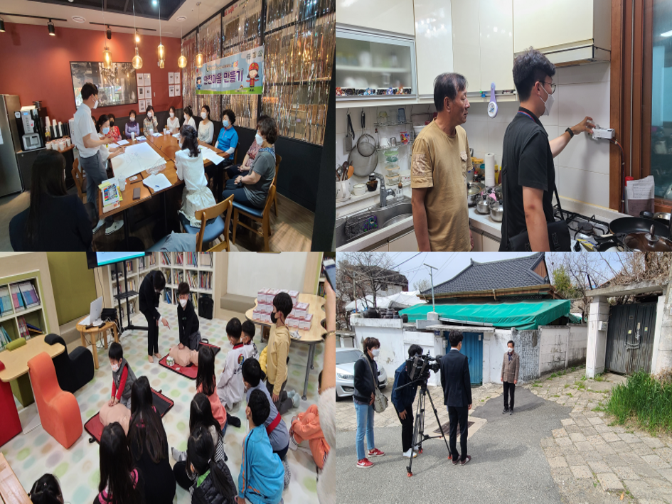
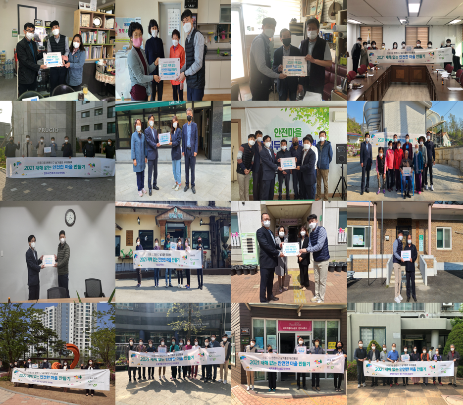
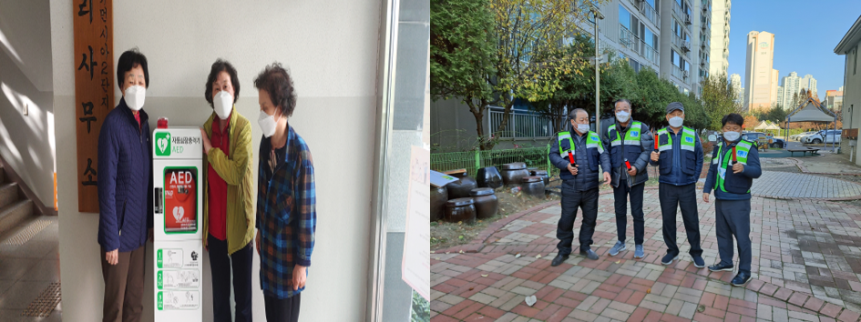
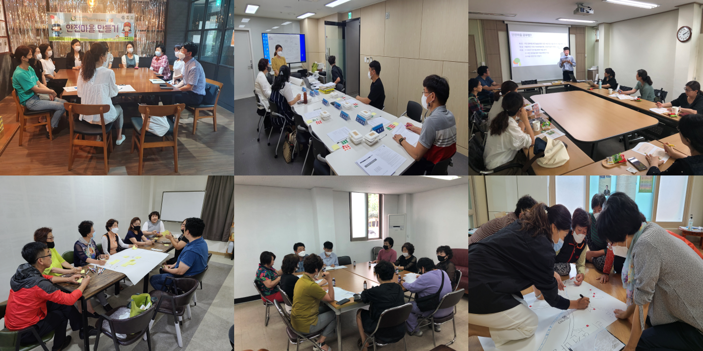
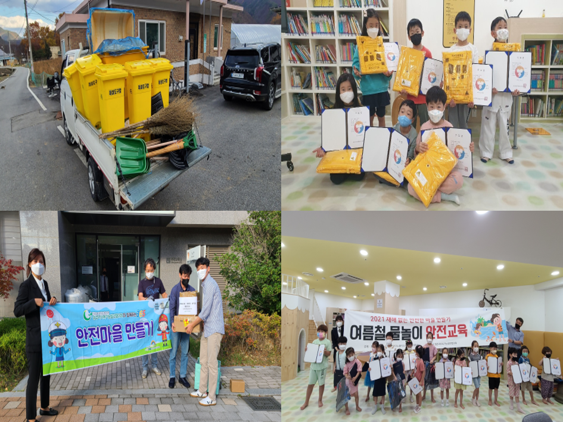
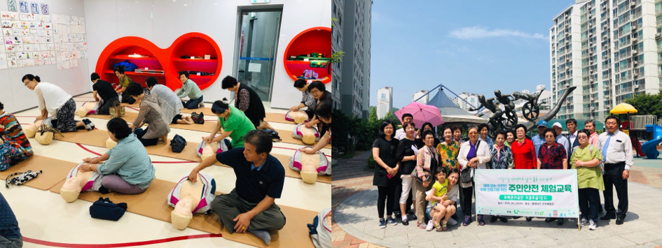
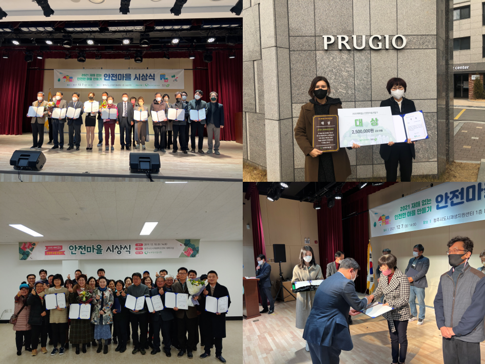

마을 공동체를 중심으로 지역 특성에 따라 발생하는 다양한 안전관리상의 문제를 발굴하고 주민 스스로 재난·재해 상황에 대해 예방 및 대처할 수 있는 여건을 조성하기 위해 청주시지속가능발전협의회와 청주시에서는 2019년부터 '재해 없는 안전한 마을 만들기' 사업을 진행하고 있습니다.
 안전마을이란?
마을 공동체를 중심으로 다양한 안전관리상의 과제를 발굴하고 주민 스스로 재난·재해 상황에 대해 예방 및 대처 할 수 있는 여건을 만들어 나아가는 마을입니다.
 ○ 안전마을 선정 및 협약
주민 주도의 지속적 활동 전개를 위한 신규마을 선정 및 활동 협약
 ○ 안전지킴이 양성 및 활동지원
마을 안전관리 및 공동체 활성화의 중심이 되는 안전리더 양성
 ○ 안전마을 공부방
마을 안전현황 파악 및 주민 안전역량을 제고하고 마을 회의를 통한 구체적인 마을별 특화사업 계획 작성마을 안전관리 및 공동체 활성화의 중심이 되는 안전리더 양성
 ○ 마을별 특화사업 지원
마을 특성을 고려한 맞춤형 안전 공동체 활성화 사업 실천
 ○ 주민안전 체험교육
안전 체험 교육을 통한 주민들의 안전 대처 능력 학습 및 제고
 ○ 안전마을 사업 공유회
안전마을 사업 활동 사례 공유 및 우수 사례 발굴
⇾ 주민 안전의식 제고 및 지역 특성에 따른 다양한 안전문화 확산 ⇾ 안전사고 예방 및 대처 체계 구축 ⇾ 마을 공동체 활성화 및 주민 주도형 사업 추진에 따른 성위감 고조